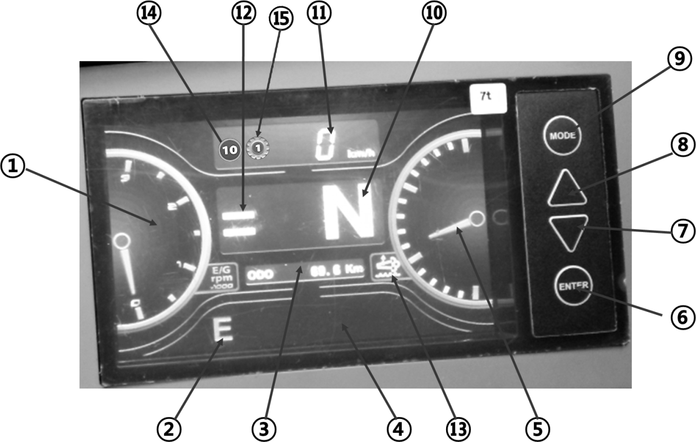

2 The Left Side Dash Board (Cabin)
-
A) Engine stop switch
- Press this switch to stop the engine
- When emergency status, for example, you cannot stop engine in spite of key switch “OFF,” push this switch. You can STOP the engine.
-
B) Emergency lamp switch
- This switch operates the emergency lamp which indicates emergency status to other vehicles.
-
C) LCD Display

Tachometer (RPM GAUGE) Display engine RPM with 1/1000 unit. MULTI TORQUE MODE for engine With the switch off, the engine reaches the maximum speed when the accelerator pedal is fully pressed. With the switch on, the engine’s speed is limited to a maximum rpm of 2,100. In the case where the vehicle is used mainly for driving, using this switch reduces fuel consumption by approximately 10%. ODOMETER Accumulated total mileage. WARNING LAMP Warning Lamp for Transmission and engine etc. DEF/Ad-Blue LEVEL GUAGE Display DEF/Ad-Blue Level, residual quantity of DEF/Ad-Blue in DEF/Ad-Blue Tank (DEF /Ad- Blue: Fluid for SCR Cleaning – DeSOx) ENTER (SELECT) Key for operating LCD Display. DOWN (RIGHT) Key for operating LCD Display. UP (LEFT) Key for operating LCD Display. MODE (BACK) Key for operating LCD Display by pressing button. DIRECTION (T/M STATUS) Display Status for direction. “N” or “F” or “R” SPEEDOMETER Display the current vehicle speed. GEAR DISPLAY (AUTO / MANUAL) The gear range indicator bars will indicate which gear is selected by displaying the corresponding number of bars. The forward and reverse indicator bars will be "OFF” when the transmission is in "MANUAL MODE". When transmission is in "AUTOMATIC MODE", all the gear range indicator bars and both travel direction indicators will be "ON". DEF/Ad-Blue Level Indicator -
Indicator lamps for DEF/Ad-Blue Level
-
Over 10%: Green ON
-
5~10%: Yellow ON
-
.Below 5%: Red Blink
Speed limit Symbol If speed limit option selected, the symbol is on. Gear limit Symbol If gear limit option selected, the symbol is on. 
DEF/Ad-Blue FAULT WARNING - If the lamp is turned on, after-treatment system should be checked.
- Refer page. 82 (Section “Detecting control failure)
SCR Cleaning-DeSOx Request / On - “Service SCR Cleaning-DeSOx” is required for removing sulphur oxides inside SCR material. “Service SCR Cleaning-DeSOx” process occurs, the vehicle cannot be used.
- Pop-up window and the lamp will be turned on 10 hours before if “Service SCR Cleaning-DeSOx” needed.
- “Service SCR Cleaning-DeSOx” will take about 30 minutes; the lamp will blink during the process.
- Press the “SCR Cleaning-DeSOx” switch continuously for 3 sec, SCR cleaning will be started. For detailed instructions refer to p.69.
SCR Cleaning-DeSOx Inhibition When the symbol is turned on and “Active SCR Cleaning-DeSOx” is inhibited by pressing the inhibition switch. In places where there is a risk of fire or explosion, to prevent fire or explosion caused by flammable substances or particles inhibition switch should be used. Exhaust Gas Temp High While SCR Cleaning-DeSOx for after-treatment, the temperature of exhaust gas will increase over 600°C. If this lamp on, operator should warn passengers around the truck not to approach or touch exhaust system especially rear side. And if the place of your truck has flammable material (Gas, Particle etc.) please replace truck to other safety zone. Weight Scale Mode Press “MODE” once, Display will change to weight scale mode, for detailed instructions, refer to page 62. Engine Check Lamp (RED) - Malfunction or necessary for diagnostic of engine, this lamp will light on.
- To check error, press “MODE” 3 seconds, display will converse to main menu then you can use check function. For detailed instructions refer to p.59.
Transmission Check Lamp (RED) - Malfunction or necessary for diagnostic of transmission, this lamp will light on.
- To check error, press “MODE” 3 seconds, display will converse to main menu then you can use check function. For detailed instructions refer to p.59.
-